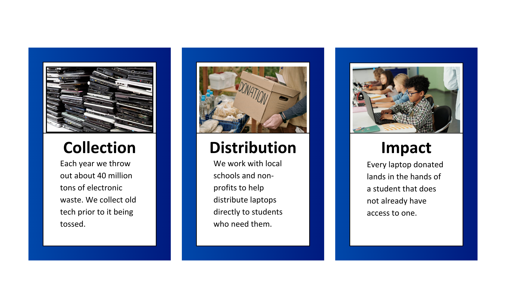

Our Mission
At the Future Coders Foundation, our mission is to bridge the digital
divide by providing underserved K-12 students with access to the tools, resources, and education they need to
succeed in the modern tech-driven world. We believe every child deserves the opportunity to explore coding and technology,
regardless of their background or circumstances. By empowering young minds with laptops, coding resources, and mentorship, we aim
to inspire the next generation of innovators, problem-solvers, and leaders in technology.
The Process
There are three main steps to our success

We partner with local companies, generous donors, and community organizations to collect laptops and funding.
These resources are then distributed to schools and nonprofits in underserved areas, ensuring they reach students who need them most. By providing access to technology,
we empower young learners to complete schoolwork, explore coding, and develop the skills needed for a tech-driven future.